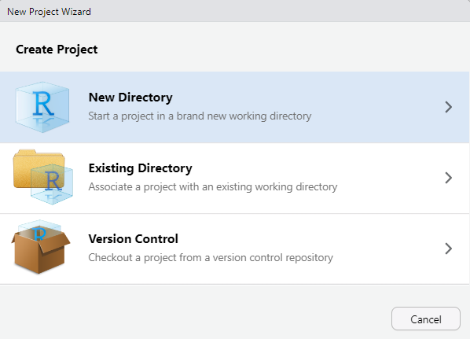
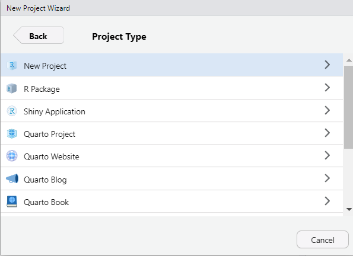
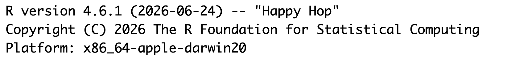
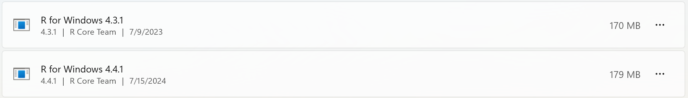
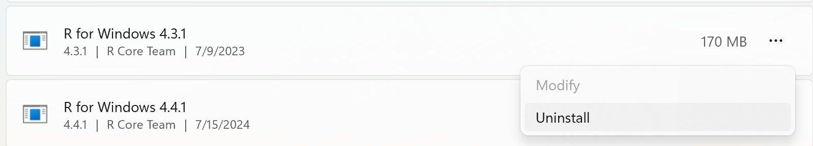
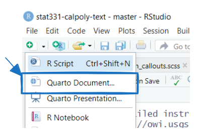
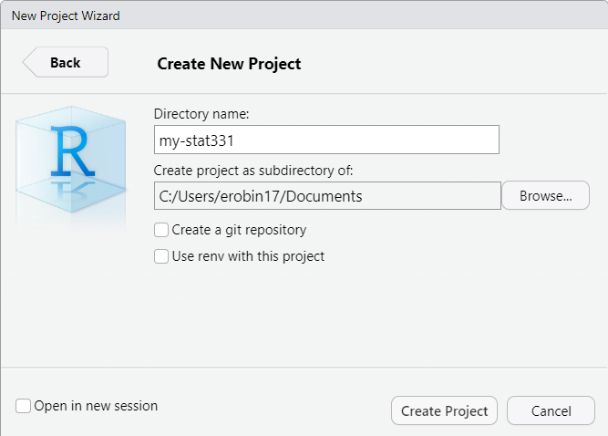
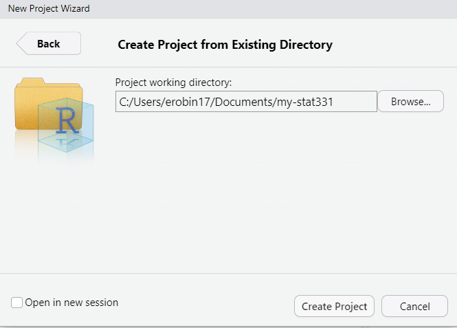

RYou need local installations of both R (the software) and RStudio (the interface for working in R). Do not skip this step if you already have both R and RStudio installed on your computer, as you need to ensure you are using the most up to date version of R and RStudio.
If you already have R downloaded, you need to confirm that you have the most up to date version of R. Do not ignore these instructions. If you neglect to update your version of R, you may find that updating a package will make it so your code will not run.

You can also see the version right under the word “Console” or by running the following code in the console: R.version.
If the version is not 4.6.1 (like the image above), you need to update your version of R! The simplest way to do this is to follow the instructions below to install R.
Download and install R by going to https://cloud.r-project.org/. Here, you will find three options for installing R—click on the option for your computer’s operating system.
Click on “Download R for Windows”
Click on “base”
Click on the Download link.
When you open the execution file (.exe) you will be prompted with a variety of questions about installing R. Feel free to use the default features / settings that come with R (continue to click “Ok” until the download starts).
Beware that if you had a previous version of R downloaded on your PC, that old version will not be deleted when you download the most recent version of R. We do not want to have two versions of R installed, as your computer can get confused what version of R to use. So, you need to remove the old version of R.
To do this you need to:

... on the right side
Click on “Download R for (Mac) OS X”
Under “Latest release:” click on R-X.X.X.pkg, where R-X.X.X is the version number. For example, the latest version of R as of August 2026 is 4.6.1 Happy Hop
When installing, use the default features / settings that come with R (click Ok until the download starts).
First, identify which version of OSx you are running. How-to
Next, find out which version of R your computer can run. Link
If this version is 3.6 or later, download the latest version that your computer can handle.
If this version is 3.4 or earlier, you’re going to run in to some trouble. I recommend updating your version of OSx, if you are willing. If you can’t, then you can use Posit Cloud to run R and RStudio on a free server. However, I recommend strongly against this option; your files will not be saved indefinitely, you will have limited hours to complete your work, your computing power will be limited, and you will need an internet connection at all times to do your work.
Click on “Download R for Linux” and choose your distribution for more information on installing R for your setup.
RStudio is an Integrated Development Environment (IDE) for R. What does that mean? Well, if you think of R as a language, which it is, you can think of RStudio as a program that helps you write and work in the language. Back in the dark ages, people wrote programs in text editors and then used the command line to compile those programs and run them. RStudio makes programming in R much easier and this course requires you to use it!
If you already have RStudio, you need to double check if you have the most recent version. You will not have access to the newest features for Quarto documents unless you have the most recent version of RStudio.
If there are no updates to RStudio since you installed it, you are good to go! If you need to update RStudio, you will be sent to Posit (the parent company) to download the most recent version of RStudio desktop.
Downloading the most recent version of RStudio works the same way regardless of whether you’ve never downloaded RStudio before or if you just need to update your version of RStudio.
When you navigate to the RStudio download page (https://rstudio.com/products/rstudio/download/), the website should automatically detect your computer’s operating system. So, you should be able to simply click the blue “Download RStudio Desktop for [insert operating system here]” button.
Clicking the button will begin installing RStudio. Once the download has completed, you will need to open the application file (on a Mac this is a .dmg file, on Windows this is an exe file).
We will learn more about Quarto notebooks next week, so for now, just make sure that you have the software set up! It is likely that it was already installed automatically.
To check, open a new Rstudio window click the + icon in the top left of the Rstudio window and see if Quarto is an option. See screenshot below.

If you do not see Quarto, download and install the latest version of Quarto for your operating system.
Since there are often many files necessary for a project (e.g. data sources, images, etc.), R has a nice built in system for setting up your project organization with RProjects. You can either create a new folder on your computer containing an Rproject (e.g., you have not yet created a folder for this class) or you can add an Rproject to an existing folder on your computer (e.g., you have already created a folder for this class).
To create a Rproject, first open RStudio on your computer and click File > New Project, then:


Give your folder a name. It is good practice for this file folder name to not contain spaces. For this course you might want stat-3540 or something like that.
Then, browse on your computer for a location to save this folder to. For example, mine is saved in my Documents. Make sure you know how to find this; it should NOT be saved in your Downloads!

This new folder, my-stat331 or whatever you called it should now live in your Documents folder (or wherever you save it to) and contain a my-stat331.Rproj file. This is your new “home” base for this class - whenever you refer to a file with a relative path it will begin to look for it here.
To add a Rproject to an existing folder on your computer (e.g., you already created a folder for this class), first open RStudio on your computer and click File > New Project, then:

Then, browse on your computer to select the existing folder you wish to add your Rproject to. For example, mine is saved in my Documents and called my-stat331.

Your existing folder, my-stat331 should now contain a my-stat331.Rproj file. This is your new “home” base for this class - whenever you refer to a file with a relative path it will begin to look for it here.

Includes the text editor. This is where you’ll do most of your work.

The logo on the script file indicates the file type. When an R file is open, there are Run and Source buttons on the top which allow you to run selected lines of code (Run) or source (run) the entire file. Code line numbers are provided on the left (this is a handy way to see where in the code the errors occur), and you can see line:character numbers at the bottom left. At the bottom right, there is another indicator of what type of file Rstudio thinks this is.
In the top right, you’ll find the environment, history, and connections tabs. The environment tab shows you the objects available in R (variables, data files, etc.), the history tab shows you what code you’ve run recently, and the connections tab is useful for setting up database connections.
On the bottom left is the console. There are also other tabs to give you a terminal (command line) prompt, and a jobs tab to monitor progress of long-running jobs. In this class we’ll primarily use the console tab.
knitr::include_graphics("https://srvanderplas.github.io/stat-computing-r-python/images/tools/Rstudio-terminal-R.png")
On the bottom right, there are a set of tabs:

plots (which will be self-explanatory),
packages (which extensions to R are installed and loaded),
knitr::include_graphics("https://srvanderplas.github.io/stat-computing-r-python/images/tools/Rstudio-packages-tab.png")

📖 Reading: R4DS: Basics of R
💻 Tutorial: R Programming Basics
This tutorial gives you an overview of the foundations that make up the R programming language, including: